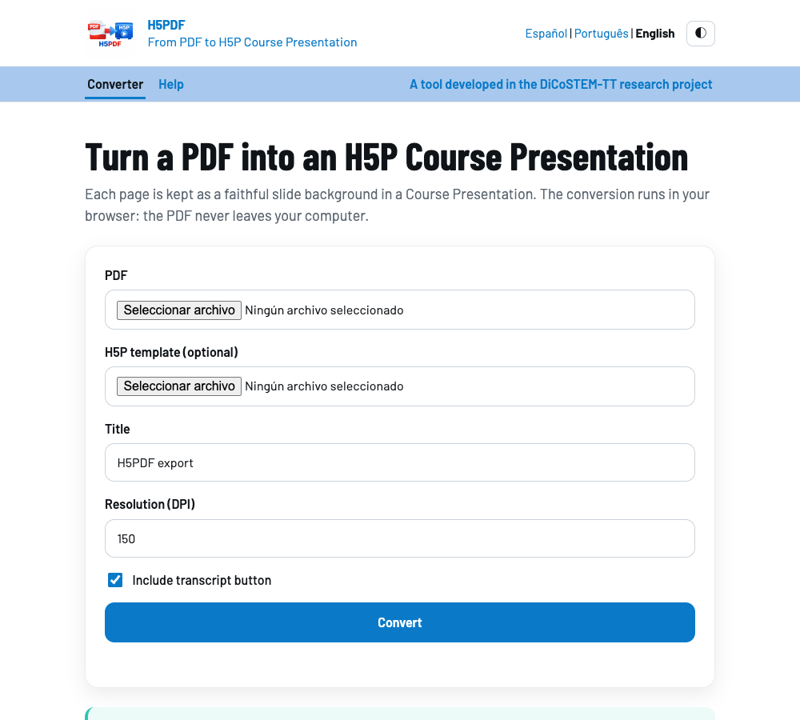
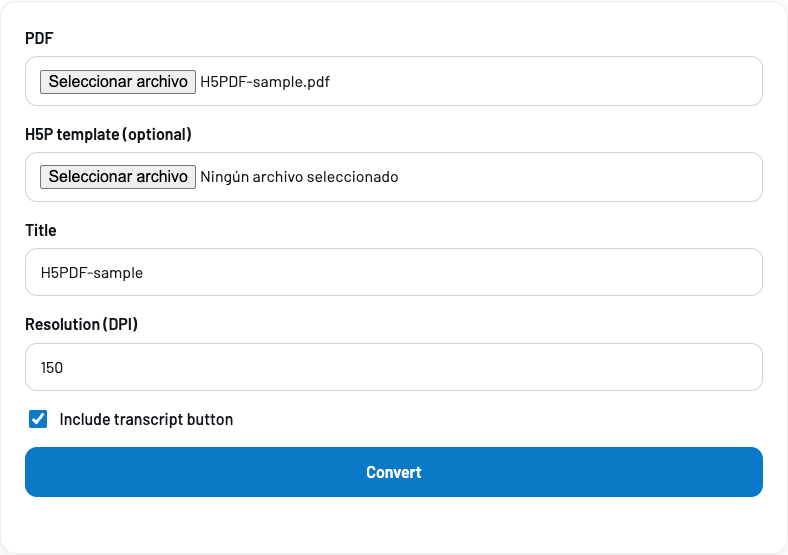
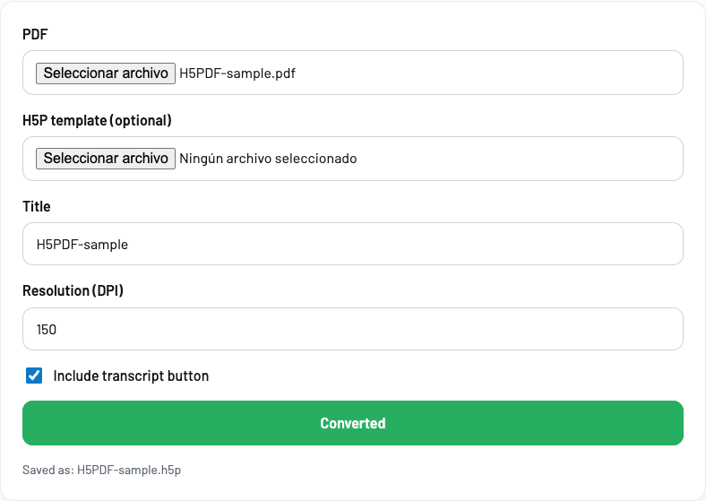
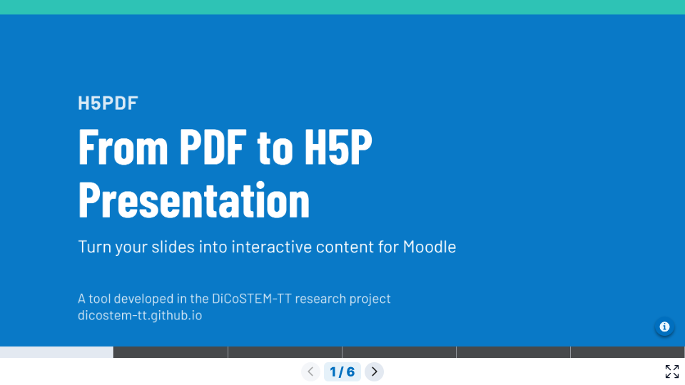
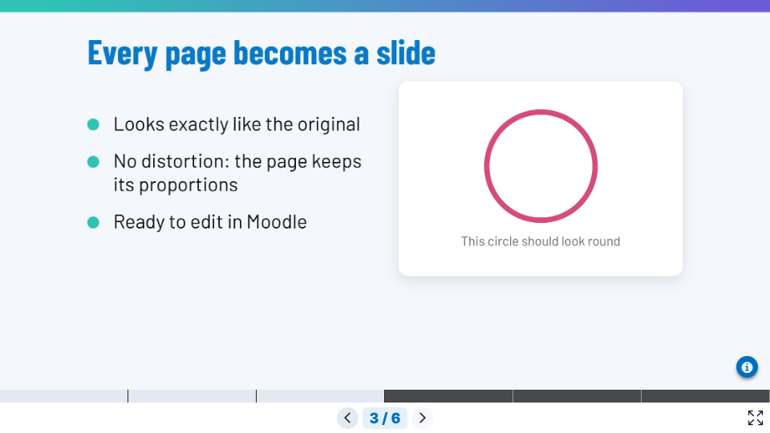
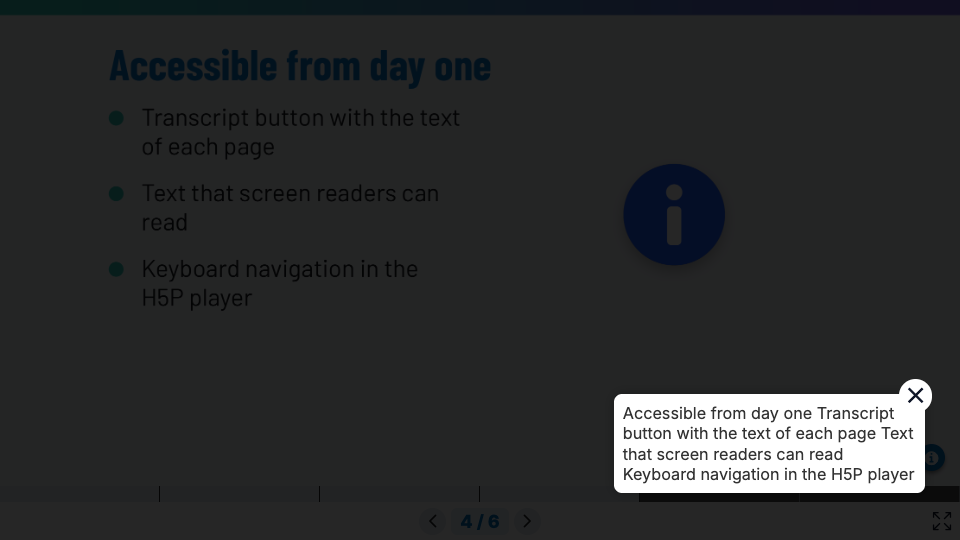

H5PDF help
Everything you need to turn a PDF into an H5P presentation and use it in Moodle. Version 0.2.0.
1. What H5PDF is
H5PDF turns a PDF (for example, slides exported from PowerPoint, Keynote, Google Slides or Canva) into an H5P package of the Course Presentation type. You upload that package to Moodle, where it can be viewed, shared and edited.
- Every page of the PDF becomes a slide. The page is used as a background image, so it looks exactly like the original: fonts, colours, formulas and drawings are kept as they are.
- If you choose to, every slide includes a transcript button with the text of the page, which screen readers can read.
- Once in Moodle, you can add questions, links, videos or other interactive elements on top of each slide with the H5P editor.
The text of the slides cannot be edited in Moodle, because it is part of the background image. To change it, edit the original presentation, export it to PDF again and convert it again.
2. Before you start
- A PDF. Any page size works; the 16:9 widescreen format makes the best use of the space. The conversion runs in your browser: very long presentations at high resolution can run out of memory, especially on tablets.
- A Moodle site with H5P. Moodle has included H5P since version 3.9. The Course Presentation content type must be available on your site (see Using it in Moodle).
- Optional: a template. If your Moodle uses unusual H5P versions, you can provide a template exported from your own Moodle (see The options).
To practise, use the sample presentation from this help: six slides that introduce H5PDF and appear in all the screenshots.
Download the sample presentation (PDF)
3. Tutorial: converting on the web
-
Open H5PDF in your browser. You will see the conversion form. You can change the language at the top right and switch between light and dark mode with the button.

The converter on the web. -
Under PDF, press the file picker button and choose your PDF. The text on that button is set by the browser, in its own language. The Title is filled in with the file name; change it if you like: it is the name the activity will have in Moodle and the suggested file name.

PDF chosen and title suggested. -
Check the Resolution and the transcript button checkbox. The defaults (150 DPI, with button) work in most cases. More details in The options.
-
Press Convert. Before starting, the browser asks where to save the
.h5pfile:- Chrome and Edge open the “Save as” dialog: choose the folder and the name.
- Safari and Firefox do not let the page open that dialog and save the file as a normal download. To make them ask where to save too, turn on the option to ask for every download in the browser settings.
If you cancel the save dialog, nothing is converted.
-
While converting, the button shows the progress. When it finishes it turns green and the name of the saved file appears below.

Conversion finished. -
Upload the file to Moodle as described in Using it in Moodle.
4. Using it offline
This version of H5PDF runs entirely in your browser. The page, its libraries and the template are downloaded from this same website the first time, and the browser keeps a copy.
- After the first visit you can open it and convert without an internet connection, in the same browser and at the same address.
- Text recognition (OCR) downloads its language models (about 6 MB) the first time a page needs it. To have it offline too, convert a scanned PDF once while online.
- It works in current versions of Chrome, Edge, Firefox and Safari. In private browsing mode the browser may not keep the copy.
5. The options, one by one
The document to convert. One PDF per conversion. It cannot be password-protected.
H5P template (optional)
H5PDF includes a Course Presentation template that works on most current Moodle sites. If your Moodle complains about the content type version when you import the result, create an empty Course Presentation in your Moodle, download it as an .h5p file and upload it in this field. From that template H5PDF takes the Course Presentation version and the versions of the elements it generates (text and image), the interface texts in your Moodle’s language and its settings, so the result matches what your site has installed. You only need to do this once and can reuse the file. If you leave it empty, the included template is used.
Title
The name of the H5P content and the suggested file name. It is filled in with the PDF name; you can change it before converting. Up to 255 characters.
Resolution (DPI)
Dots per inch used to draw each page. Accepts values from 72 to 600.
- 150 (default): sharp on normal screens with a moderate file size.
- 200–300: for high-resolution screens, full-screen projection or pages with very small text.
- 96–120: for long presentations or if your Moodle limits the size of uploaded files.
Doubling the resolution makes each image roughly four times larger.
Include transcript button
Adds a round blue button (i) to the bottom right corner of every slide. Pressing it opens a box with the text of the page. It helps accessibility (screen readers read it), copying text and searching. If a page has no text, because it is an image or a scan, H5PDF recognises it automatically (OCR) in Spanish, Portuguese and English, giving priority to the interface language. Recognition runs in your browser with Tesseract.js; the first time, the language models (about 6 MB) are downloaded from this same website. Check the recognised text: it may contain mistakes, especially in formulas, tables or handwriting.
6. What the .h5p file contains
The file is a standard H5P package with one slide per page. It carries no code of its own, only content, so Moodle treats it like any other Course Presentation.

Proportions: nothing is distorted
H5P keeps the bottom of the presentation for its navigation bar, so the space available for each slide is slightly wider than 16:9. H5PDF places each page centred and undistorted, and fills the side margins by extending the colours at the edges of the page. With plain or gradient backgrounds the margins are invisible; if a photo touches the left or right edge, you will see a stripe.
The same applies to other formats: on a 4:3 page the side margins are wider, and on a page that is wider than the space the filling is added at the top and bottom.

The transcript button

7. Using it in Moodle
There are two common ways. The exact menu names may vary slightly depending on your Moodle version and theme.
As an H5P activity in a course
In the course, turn Edit mode on.
In the section you want, choose Add an activity or resource → H5P.
Give it a name, drag the
.h5pfile into the package file field and save.
In the content bank
Open the course Content bank and press Upload.
Choose the
.h5pfile. From there you can reuse it in several courses or activities.
Adding interactivity
Open the content with Edit (in the content bank or from the activity). Each slide has the page as its background; use the Course Presentation toolbar to add questions, text, links, images or videos on top. Do not delete or move the background image.
If Moodle does not recognise the content type (for example, a missing library error), Course Presentation is not installed or is disabled on your site. A Moodle administrator can enable or update it in Site administration → H5P → Manage H5P content types. You can also try with a template exported from your Moodle (see H5P template).
8. Tips for preparing the PDF
- Design in widescreen (16:9). It makes the best use of the H5P space.
- Export to PDF from the original application rather than printing to PDF or scanning: the text is kept and the transcript is complete.
- Avoid photos or elements touching the left and right edges of the page: that is where H5PDF extends the background.
- Keep the bottom right corner clear if you include the transcript button.
- PowerPoint and Keynote animations and transitions do not carry over to the PDF. If a slide builds up in several steps, export the steps as separate pages or add the interactivity later in Moodle.
- If the presentation is very long, consider splitting it: it is easier to edit in Moodle and the file is lighter.
9. Troubleshooting
| Message or symptom | What to do |
|---|---|
| “The file is not a valid PDF” or “H5PDF only accepts PDF files” | Check that the file really is a PDF and not another format renamed. Export it again from the original application. |
| “The PDF is damaged or cannot be opened” | Open it in Preview or Acrobat; if it opens, save it again as PDF and try again. |
| “The PDF is password-protected” | Remove the protection (for example, by exporting it again without a password) and convert it again. |
| “The PDF could not be converted” | Try a lower resolution or export the PDF again. |
| “Invalid H5P template” | The template must be a Course Presentation .h5p exported from Moodle. Leave the field empty to use the included one. |
| No save dialog appears (web) | In Safari and Firefox the file goes to the downloads folder. Turn on the option to ask where to save in the browser settings. |
| The web page shows no styles or an old design | Force a reload with ⌘ ⇧ R (Ctrl F5 on Windows). |
| The conversion stops or the tab reloads by itself | The browser ran out of memory. Lower the resolution, close other tabs or split the presentation. |
| Moodle does not import the file | See the note in Using it in Moodle about the content type. |
| The transcript is empty or has mistakes | The page is an image or a scan and text recognition could not read it well. If you can, export the PDF from the original application so the text is included. For a scan, use a resolution of 200–300 DPI. |
10. Privacy
- Your files never leave your computer. The PDF is processed in your browser and the result is saved straight to where you choose. Nothing is sent to any server: this website only delivers the page and its libraries.
- To work offline, the browser keeps a copy of this website (not of your PDFs or the packages you create).
- The page uses no cookies or third-party services. It only remembers in your browser whether you prefer dark mode.
- It also remembers the language you choose.
11. Version and information
H5PDF 0.2.0. H5PDF was developed in the DiCoSTEM-TT research project, “Digital Competence and STEM Education in Teacher Training”, as a resource for teachers who create digital materials for Moodle. If you use H5PDF in your teaching or in a publication, please mention the project.
Proyecto de I+D+i PID2022-140601OA-I00, financiado por MCIN/AEI/10.13039/501100011033/ y por FEDER «Una manera de hacer Europa».
H5PDF’s code is distributed under the Apache 2.0 licence, and this help, the screenshots and the sample presentation under the CC BY 4.0 licence. The institutional logos in the footer are not covered by those licences. Third-party libraries keep their own (third-party notices).
H5P is an open-source project by h5p.org. Moodle is a registered trademark of Moodle Pty Ltd.